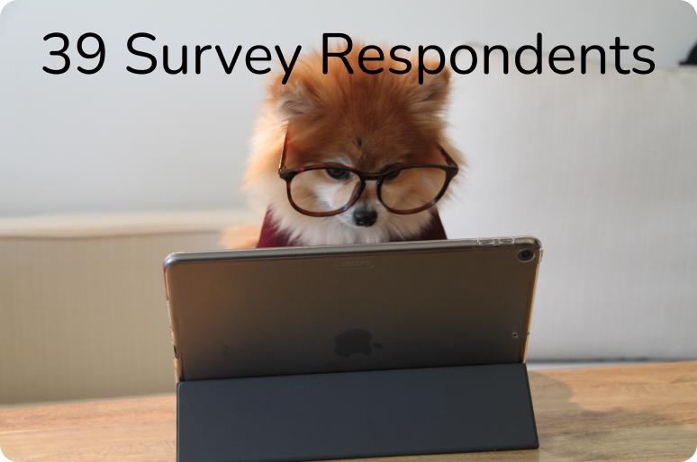
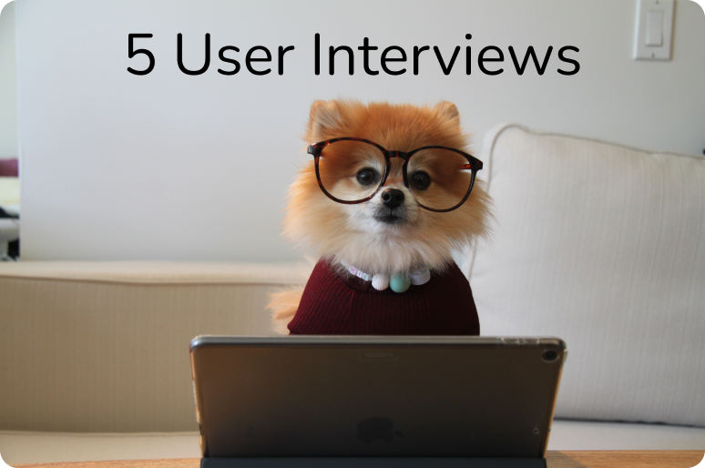
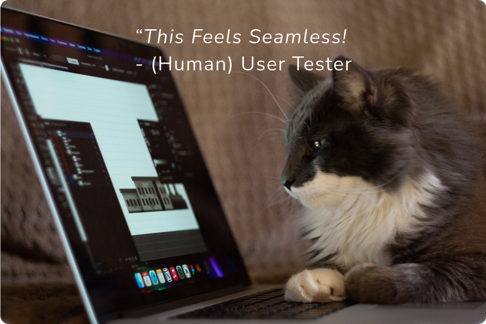

SUMMARY
Nonprofits are especially scrutinized by potential patrons and animal shelters are no exception to this. It was my team and I's responsibility to give Chicago shelter, Felines and Canines (F&C), a site refresh to make donors trust the website and follow-through on adoptions and donations. They’re a small staff known for their personable service and we wanted users to feel that throughout the site to build user connection and confidence to take action.
Problem: Having a website that evokes warmth and trust is the key to to attracting and encouraging follow-through for both adopters and donors.
Solution: Present information about Felines and Canines in a way that ensures that the user -
- feels connected to the mission.
- trusts them with their donations.
- wants to adopt from them.
Team: 3 UX / UI Designers
Role: PM, UX / UI Designer
Responsibilities:
- User Interviews & Surveying
- Persona Creation
- Heuristic Evaluation
- Competitor Analysis
- Storyboarding
- Style Guide Creation
- Wireframing
- User Testing
- Iterating
- Goal Setting & Management
- Stakeholder Alignment
Role: Timeline: 3 weeks
Quick Links
1. Research
Where do users prefer to get their pets from? And what do they care about?
I worked with my team to sketch out a research plan for interviews as well as write a survey for pet owners and those interested in pets. Most of our respondents adopted from a shelter and cared about an organization's mission and how they used their funds. They also wanted to feel connected to the mission.
Where users look for pets
Reasons for donating
Understandably, frustrations from ‘competitor’ organizations were largely around wondering where their money went and wanting more information about the animals at the shelter.
Key learning: Trust and connection were central the user.
 We also did a deep dive into the site's information architecture to evaluate its content and where users might run into problems. Due to limited staffing, the shelter outsourced its pet information and donation processes, so users were sent to another tab on a third-party site to complete their tasks. In addition to the (joyful!) experimentation with typefaces, there was a lot of information about a rescue center in Alabama. With a little more research, I learned the shelter was the first of its kinds - rescuing animals from overcrowded shelters in Alabama and taking them to the Midwest where there is greater demand for adoption. It was especially important for us to highlight their incredible mission so users can also be impressed and inspired to support them.
Screenshots of the Felines & Canines homepage, donation, and adoption pages.
Key learning: Users needed to stay on the site and learn more about the shelter’s great work. We would also need to balance the limited resources of the stakeholder.
2. Definition
Who are we catering to? What are we solving for?
It became obvious through empathy mapping that our persona loves animals and cares a lot about if a nonprofit she adopts from or donates to uses its funds for its mission. Our user needed to feel connected with the organization's mission, trust them with their donations, and want to adopt from them. I facilitated a brainstorming session on ideas to meet these goals, from easy fixes to pie in the sky ideas. We then prioritized these features based on what was most important to the user and what was feasible for F&C.
Our persona, Anne, does her research!
Key learning: Site design of the donation and adoption process needed to connect the user to F&C’s mission and build user confidence.
3. Ideation
What does trust look and feel like?
To get an understanding of what the user needed to feel that trust and connection, I led the team through iterations of storyboarding. We combined our best ideas that solved the user's natural skepticism.
- For the adoption process, we focused on -
- Integrating the pet bios into the website
- Building an adoption survey widget that taught users what to expect from adoption
- Offering a faster response time through an in-site appointment setup
- I focused especially on the donation process, where I brainstormed -
- Improving the explanation and layout of the shelter's mission
- In-site payment modal
- Packaging up donation options on cards that told the user what their money would go to
(One) playful Sans Serif typeface, a joyful color combination, rounded corners, and lots of adorable photos pulled from the shelter facebook to make user’s feel the shelter’s warmth.
I then collaborated with team members on implicitly building trust through a new style guide inspired by the shelter's brand of warm, friendly service and the playfulness and joy that comes from the animals they save. We selected a color scheme that would evoke that feel, as well as a typeface and radius for cards that were rounded and playful to further connect the brand, and therefore give the user something to connect to. We also did a deep dive into the site's IA to evaluate its content and where our users might run into problems.
Key learning: Clearly laid out information, as well as warm, clean branding can build user trust explicitly and implictly.
4. Prototyping & Testing
Validating (and invalidating) our decisions
We decided to split up prototyping to generate more ideas faster. I focused on implementing our ideas from the donation flow through breaking up donation options onto cards, utilizing dropdowns, and a pop-up modal for completing donations on-site. I also wireframed the homepage and the 'about us' page, focusing on letting copy and images display the mission clearly and proudly.
We combined our ideas into one prototype. I looked for feedback from my team frequently on ideas and offered it as well to ensure we were being open and making the best product for our user and stakeholder.
I worked with my team to develop 3 tasks to test users on typical user pathways and tested 6 users. I focused specifically on testing our mobile prototype.

Donation flow iterations for the mobile viewport.
Key learning: We got some things right, and some things wrong.
- For the adoption process -
- Users loved the pet bios
- Users wanted to see photos of animals and skip the philosophy and process
- Users wanted a gender filter
- Users were confused if they were scheduling or applying for a pet
- For the donation process -
- Users loved the donation dropdowns
- Users wanted to see their progress in the donation modal
- Users didn’t want to see a donate button in navigation, then immediately after in the hero image

Adoption flows iterated on desktop viewport.
We tested and moved into mid-fi, incorporating results from our testing and adding in the style guide. We then tested another 6 users on the 3 tasks again and achieved perfect results! To move our prototype into hifi, we cleaned up some additional features to ensure the styling was as seamless as possible for the user.
Key learning: Breaking information down and updating the branding made users trust the site more.
- For the adoption process, users loved -
- Seeing the animals first and the number of filter options
- Learning about what would be required to adopt a pet while going through survey widget
- Scheduling appointment upon survey completion
- For the donation process, users loved -
- The ‘friendly feel’ of the page
- Reading what their donations would go to (i.e. medical supplies) based on amount chosen
- Ease of donation modal
5. Conclusion & Opportunities
Looking back and forward
On a personal note, I really valued this project! Not only did I get to support a cause I am passionate about (as an owner of 3 adopted animals), I was able to work with 3 people who were dedicated to our task. They showed up to meetings with great ideas and feedback, and really pushed the bounds of what was possible within a short timeline. I'm so grateful to have worked with wonderful people on a great topic. Our final wireframes were received quite positively and I personally had several takeaways from this experience.
Key learning: Your stakeholder is a user you can’t forget about.
- The staff size was a constant consideration in the feasibility of our decisions
- Timesavers for staff (like automated appointment scheduling) would free up time for them to devote toward the mission - what the user ultimately cares about
- Condensed text for easy scanning and breaking up copy on cards whenever possible keeps the user engaged and confident in proceeding with their task
- Clean and consistent design gives the user the sense that ‘these people have it together'
There are still opportunities for this site to improve. I would love to get this in front of the stakeholder to get additional feedback. In addition, I'd love to add additional interactions to delight the user. In addition, I was challenged by the idea of making multiple, complex donation options simple. I would love to further iterate on what I created to make the process as simple and transparent as possible for the user.